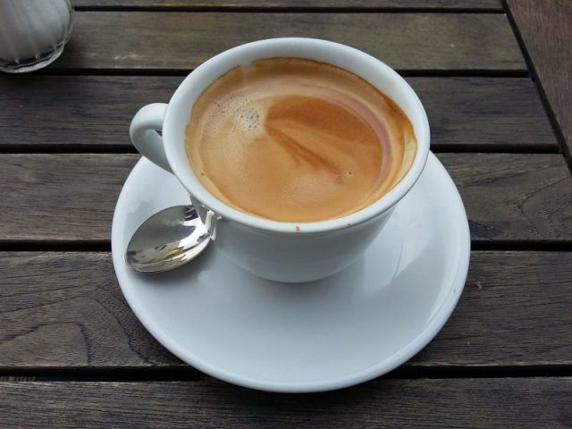
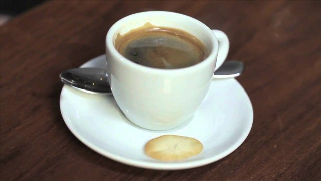
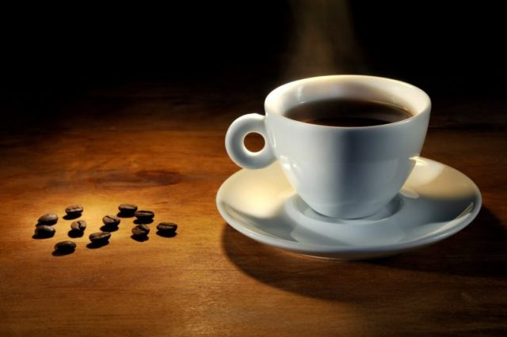
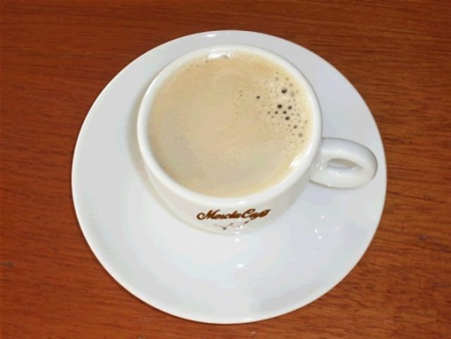
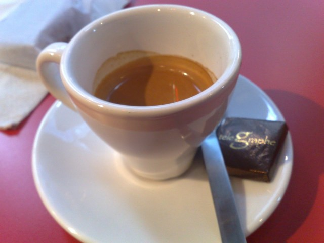
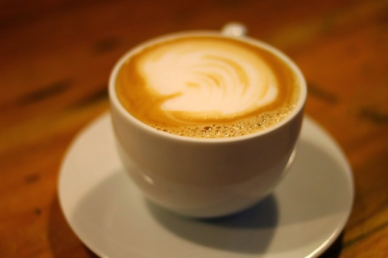

Café Abatanado
É o café controverso: “são duas bicas mais um bocadinho de água“.

Café Carioca
É um “segundo café”, tiramos 2 cafes com os mesmos grãos.

Café Descafeinado
Também tem cafeína, no entanto, em menores quantidades do que um café normal.

Café Garoto
É um café com um pouco de espuma de leite.

Café Italiana
Café muito curto (no máximo até meia chávena).
